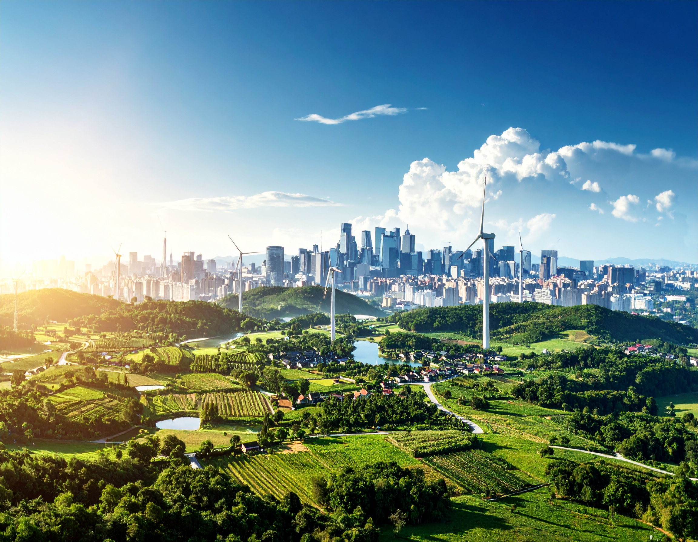

O campo e a cidade parecem mundos diferentes, mas caminham lado a lado. Enquanto o campo planta, a cidade colhe ideias. Enquanto a cidade inova, o campo mantém viva a tradição. Nossa festa celebra essa conexão poderosa — onde os alimentos, os saberes e os valores passam de mãos em mãos, criando pontes entre quem cultiva e quem consome, entre quem preserva e quem transforma. Aqui, o som da sanfona encontra o barulho dos carros. A terra vermelha encontra o concreto. A simplicidade do interior encontra o ritmo da cidade. E juntos, criam algo novo, forte e cheio de vida.
O campo planta, a cidade consome. Essa troca alimenta a todos.

Tradições rurais influenciam festas, músicas e costumes urbanos.

Inovações urbanas ajudam o campo a produzir mais e melhor.
© 2025 Campo e Cidade - Todos os direitos reservados.